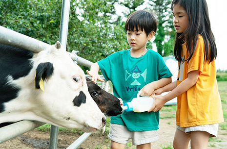
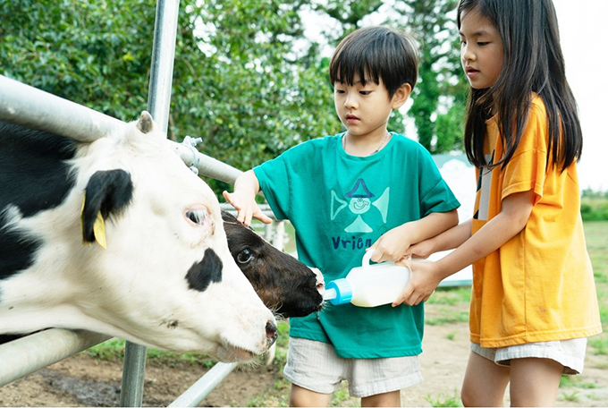
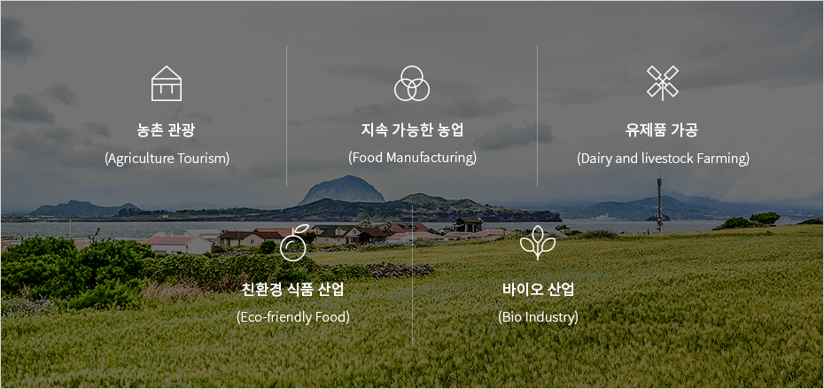

1차 산업
- Home
- 투자환경
- 미래 유망산업
- 1차 산업
1차 산업 (Primary Sector)


아시아에서 높은 인지도를 구축하고 있는 제주의 청정자연 브랜드와 세계적인 휴양관광산업과 링크된(Linked) 제주의 지속 가능한 1차산업은 잠재가치가 풍부한 미래 유망산업입니다.
대한민국 최남단에 위치한 화산섬 제주의 풍부한 농업, 해양, 목축 자원과 수자원을 활용하여 생산된 고품질의 제품들은 대한민국 소비자뿐만이 아니라 중국을 비롯한 아시아 지역 소비자들에게 많은 사랑을 받고 있습니다.
제주의 청정 원물을 가공하여 고부가가치 상품으로 재생산 하는 환경친화적인 브랜드 상품 개발과 우수한 관광 인프라를 접목한 농촌관광은 제주의 정체성과 결합되어 타지역에서는 찾아볼 수 없는 차별화된 가치를 부여할 것입니다.
